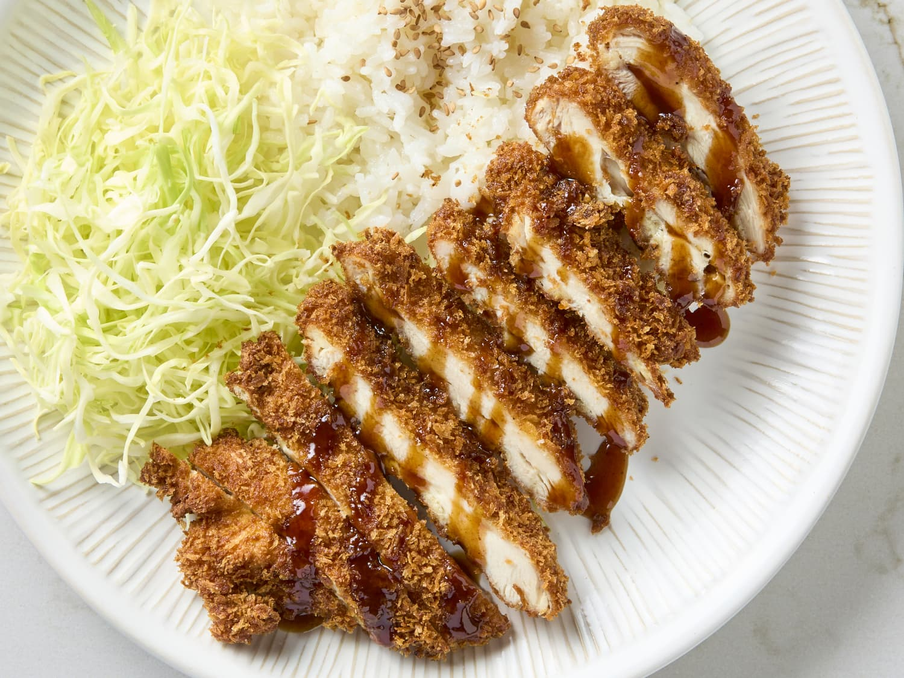

Chicken Katsu

Description
Chicken katsu is a popular Japanese dish consisting of a breaded and deep-fried chicken cutlet. It is made by coating chicken breast or thigh in a light, crispy layer of panko breadcrumbs after being dipped in flour and beaten egg. The result is a golden, crunchy exterior that contrasts with the juicy, tender chicken inside. Chicken katsu is often served with a tangy, savory tonkatsu sauce and accompanied by shredded cabbage, rice, or miso soup. It's a comforting and flavorful dish that combines a delicate balance of texture and taste, making it a favorite in Japanese cuisine.
Ingredients
2 boneless, skinless chicken breasts (or thighs)
Salt and pepper, to taste
1/2 cup all-purpose flour
2 large eggs, beaten
1 cup panko breadcrumbs
Vegetable oil, for frying
Tonkatsu sauce, for serving (optional)
Shredded cabbage, rice, or miso soup (optional sides)
Steps
- Prepare the Chicken: Season the chicken breasts with salt and pepper. If they are thick, pound them to an even thickness for more consistent cooking.
- Coat the Chicken: Set up a breading station with three bowls: one with flour, one with beaten eggs, and one with panko breadcrumbs. Dredge the chicken in flour, dip it in the egg, and coat it in the panko breadcrumbs, pressing gently to ensure they stick.
- Fry the Chicken: Heat vegetable oil in a pan over medium heat. Fry the chicken cutlets for 3-4 minutes on each side until golden brown and cooked through.
- Drain and Serve: Remove the chicken and let it drain on a paper towel. Slice the chicken and serve it with tonkatsu sauce, shredded cabbage, and rice if desired.